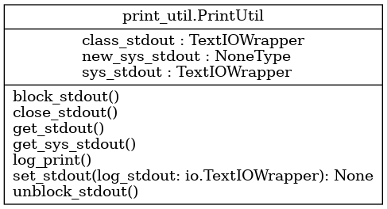

Module print_util
Diagramme de classe
{kind=link}
Code du module
Code utilitaire pour gérer l’impression
Copyright 2025 F. Mailhot et Université de Sherbrooke
- class print_util.PrintUtil[source]
Bases :
objectClasse permettant la gestion de l’impression :
Permet de définir où se fera l’impression des messages de test (écran ou fichier de log)
Permet de désactiver les impressions effectuées dans le code étudiant
- Cette classe est utilisée directement, sans instance, en utilisant uniquement :
des attributs de classe
des méthodes de classe
- Les attributs de classe utilisés sont:
class_stdout : sys.stdout par défaut, peut être redéfini, utilisé par log_print()
- sys_stdoutcopie de sys.stdout, ne peut être modifié, conserve le « vrai » sys.stdout
utilisé pour revenir à sys.stdout après blocage des print()
Copyright 2025, F. Mailhot et Université de Sherbrooke
- classmethod block_stdout()[source]
- Redéfinit stdout pour l’impression dans le code étudiant (print standards) :
Remplace stdout par /dev/null (impression inactive)
- Returns :
(void) : Au retour, sys.stdout est redéfini vers os.devnull
Copyright 2025, F. Mailhot et Université de Sherbrooke
- class_stdout = <_io.TextIOWrapper name='<stdout>' mode='w' encoding='utf-8'>
- classmethod close_stdout()[source]
- Ferme le fichier associé au stdout utilisé par la méthode log_print :
Appelé à la fin, pour fermer correctement le fichier de log
Si le « fichier » de log est l’écran (sys.stdout), ne fait rien
Copyright 2025, F. Mailhot et Université de Sherbrooke
- classmethod get_stdout()[source]
Retourne le stdout utilisé pour l’impression avec la méthode log_print :
Copyright 2025, F. Mailhot et Université de Sherbrooke
- classmethod get_sys_stdout()[source]
Retourne la version originale de sys.stdout :
- Returns :
(void) : Au retour, sys.stdout original est retourné
Copyright 2025, F. Mailhot et Université de Sherbrooke
- classmethod log_print(*args, **kwargs)[source]
Imprime dans le fichier de log :
- Args :
args : Paramètres habituels de print() kwargs : Paramètres habituels de print()
- Returns :
(void) : Au retour, l’impression a eu lieu dans le fichier de log
Copyright 2025, F. Mailhot et Université de Sherbrooke
- new_sys_stdout = None
- classmethod set_stdout(log_stdout: TextIOWrapper) None[source]
- Redéfinit stdout pour l’impression effectuée par la classe (méthode log_print) :
Permet d’identifier où se fera l’impression (écran ou fichier de log)
- Args :
log_stdout (io.TextIOWrapper) : Le nouveau fichier de log
- Returns :
(void) : Au retour, stdout est redéfini pour la méthode log_print
Copyright 2025, F. Mailhot et Université de Sherbrooke
- sys_stdout = <_io.TextIOWrapper name='<stdout>' mode='w' encoding='utf-8'>
- classmethod unblock_stdout()[source]
- Remet la valeur par défaut de sys.stdout :
Permet d’imprimer de nouveau normalement avec print()
N’est utilisé que si block_stdout a été utilisé auparavant
- Returns :
(void) : Au retour, sys.stdout original est revenu
Copyright 2025, F. Mailhot et Université de Sherbrooke
Note
Documentation créée le 20 févr. 2025.